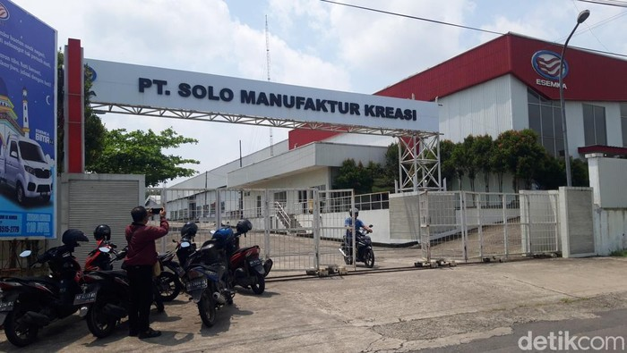

Kesaksian Kades soal Nasib Pekerja di Pabrik Esemka, Ternyata Oh Ternyata

Jakarta - Esemka kembali mendapat sorotan. Perkaranya, ada pemuda
asal Solo, Jawa Tengah, yang melayangkan gugatan ke pengadilan. Lantas, bagaimana
kondisi terkini pabrik Esemka di Boyolali? Masihkah ada pekerja yang bertugas di sana?
Kemarin (9/4), tim detikJateng baru saja mengunjungi pabrik Esemka yang bertempat di Desa
Demangan, Kecamatan Sambi, Kabupaten Boyolali. Namun, ketika itu, manajemen Esemka tak bisa ditemui.
Tim detikJateng akhirnya menemui Rosyid Setyawan selaku Kepala Desa Demangan. Pada kesempatan itu,
sosok tersebut bicara banyak mengenai kondisi terkini pabrik Esemka.
Rosyid mengklaim, hingga sekarang, masih ada karyawan yang bekerja di pabrik Esemka. Bahkan, kata dia,
tak sedikit yang merupakan warganya sendiri.
"Jadi terkait dengan eksistensi pabrik Esemka yang saya tahu ya seperti itu, masih ada karyawan. Kalau
di dalamnya seperti apa saya juga tidak tahu, karena kami hanya pemerintah desa, yang komitmennya adalah
tanah disewa," kata Rosyid Setyawan, dikutip dari detikJateng, Kamis (10/4).
Dikemukakan pula, ada puluhan warga Demangan yang menjadi karyawan di pabrik Esemka. Sampai sekarang juga
masih bekerja semua. Gaji karyawan juga dibayar sesuai komitmen yang dibuat dan belum pernah ada aduan ke
pihaknya dari warganya yang menjadi karyawan pabrik Esemka, terkait keterlambatan gaji.
"Kalau eksistensi sejauh ini ya aktivitas masih ada, cuma apa yang terjadi di dalam saya memang tidak begitu
paham. Kalau karyawan yang ada di situ setahu saya, kurang lebih ya 100 sampai 150," sambungnya.
Menurut dia, PT Solo Manufaktur Kreasi sebagai perusahaan menyewa tanah kas Desa Demangan selama 30 tahun
untuk produksi mobil Esemka. Luas lahan yang disewa kurang lebih 11 hektar. "Nilainya setiap tahun itu yang
dulu, Rp 114 juta. Lahan semuanya itu. Terus baru 2 tahun terakhir ini, ada kenaikan menjadi Rp 134 juta. Dibayarkan
setiap bulan Agustus," kata dia. Ditambahkan, terkait pembayaran uang sewa itu selama ini tidak pernah ada keterlambatan.
Diberitakan sebelumnya, seorang warga Solo menggugat Presiden RI ke-7 Joko Widodo atau Jokowi dan PT SMK. Dia mengaku
kesulitan membeli mobil tersebut. Penggugat menganggap Jokowi wanprestasi lantaran tak mampu merealisasikan program mobil nasional.
Lihat Artikel Lainnya